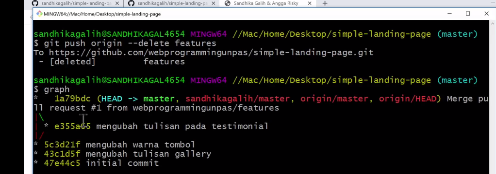

Remote Branch
-
bagaimana membuat branch saat direpo kita, kita usulkan
branch kita ke repo sumbernya / aslinya
Saran
-
kalo kita ambil dari orang lain untuk berkontribusi,
kita jangan ubah master apapun yang kita ambil
-
kalo pengen mengubah kita buat branch baru, biarkan
branch master sesuai dengan repo asli
git checkout -b
- bikin branch dan langsung beralih
meghapus branch di commit
